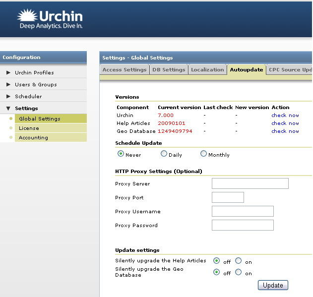

Urchin 7 HC: Automated Updates
U7 HC: Automatic Updates
Overview
Urchin 7.000 (and later) supports automated updates for all Urchin components such as the Urchin product, Help Articles and Geo database.
The main reasons for automated updates are:
-
The Adwords Data API receives frequent updates; backwards compatibility is guaranteed only for limited period of time;
-
Urchin Embedded Help and Help Center documentation can now be updated independently from product releases.
-
Patches with critical bug fixes can be rolled out to Urchin users and seamlessly installed.
How to Use the Automated Updates
By default, automated update is switched off. All auto updates settings can be configured on the tab Global Settings->Auto Updates and are available for super admin user only.

To automatically upgrade the product from the web UI, set the updating interval. The Urchin scheduler checks for updates according to this interval. If available, the user receives alerts in the Admin UI and is able to schedule a download of updates. Once the updates have been downloaded, the UI message is changed to "install now". Clicking "install now" causes Urchin to automatically backup itself and upgrade to the latest version. If no updates are available, the message "Urchin is up to date: LAST_UPDATE_TIME" is displayed. If any components require update, the message is changed to "Updates available, view now". "View now" is a link to the Autoupdates Scheduler Configuration tab.
Note: Super Admin user is allowed to cancel the upgrade process. Upon "cancel" the downloaded packages are removed from the system and Urchin restores to pre-upgrade state.
Every auto update activity that has been performed via the Auto Update Scheduler is displayed on the Auto Update History page. A summary of the updates is listed, which provides valuable information on each update. The Status field can be clicked to view the runtime detail for a previously run task.
Autoupdate Scheduler Configuration
The Autoupdate Scheduler Configuration is responsible for the actual scheduling and execution of Urchin component updates. From the Autoupdates Scheduler, you can add upgrade tasks to the list of Urchin events for repeated execution at nearly any interval desired.
The following upgrade frequencies are available:
Unattended upgrade
Automated updates can be configured in unattended mode for the following Urchin components:
-
Embedded Help
-
Help Center articles
-
GEO database
To enable silent upgrade, you must select the check box for the corresponding Urchin component.
Urchin Auto Update Recovery mode
In the event of an unhandled error during the upgrade (e.g. power outage), Urchin performs a rollback operation and restores itself to the pre-upgraded state.
Downloading Urchin updates via proxy
The automated update needs an internet connection to be able to check for and download new updates. If your network topology includes a proxy server, you need to enable update downloading via proxy.
To enable it, navigate to the section "HTTP Proxy Settings" on the tab Settings->Global Settings->Auto Updates and provide values for the following settings:
-
Proxy Server - Server name or IP Address running proxy server
-
Proxy Port - Port number of running proxy server
-
Proxy Username
-
Proxy Password